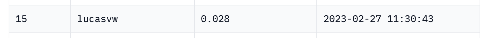
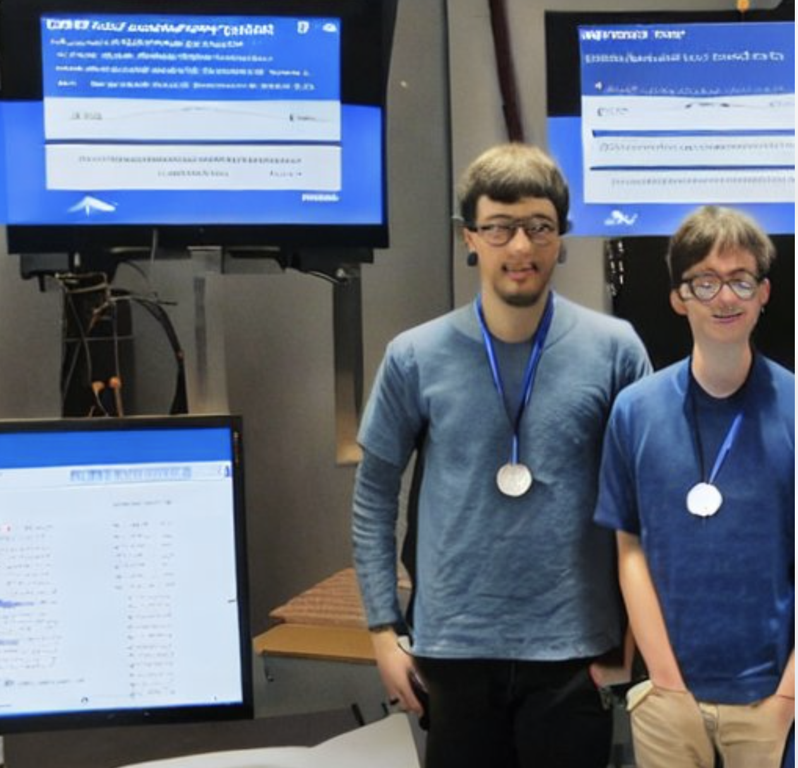

First competition🏅
In the past couple of weeks I have participated in the first ever Hugging Face competition: aiornot. And as a matter of fact, it was also my first competition to participate in! The competition consisted of 62060 images (18618 train and 43442 test images) which were either created by an AI or not (binary image classification).
Today, the competition has finished and the private leaderboard has been made public. I’m super happy (and proud 😇) that I finished in 15th place (98 participants):

Credit where credit is due:
🤗 Hugging Face
I would like to thank Hugging Face and in particular Abhishek Thakur for organizing this competition. I started looking for a first competition at Kaggle a few weeks back, and was very interested in the RSNA competition but quickly found that it was probably a bit too complicated for my first competition. I then saw a tweet from Abhishek announcing this competition and found it a perfect competition to get started.
fastai
In the past month I have been following the fastai course and I am extremely grateful to Jeremy Howard and Sylvain Gugger for creating fastai. The book, the course, the videos and the great community they have built is really something special and is perfectly tailored for anybody who wants to get started with Deep Learning. Without fastai I could never have pulled this off 🙏.
Learnings and notes
I quickly learned that data augmentation didn’t work well on this data. Initially I was a bit surprised by this, but upon inspection of the images I arrived at the following intuition. Normally we want to classify images by what’s being displayed in the image. So 2 images of a bike should both be classified as such. However, in this dataset we can have images of the same object but if one is created by an AI, and the other is not then they should be classified differently. So instead of looking at what’s being displayed, it probably has to learn more about the style or the way the image is built up. I can imagine that data augmentation makes this more difficult, especially warping, affine transformations and brightness, contrast augmentations. I was happily surprised to find that the 2nd and 4th place solutions also didn’t use these data augmentation!
Training on larger images works very well. I got a large performance boost for switching to sizes of 416. Jeremy Howard mentioned that this generally works well, and I think because of the nature of these images it worked especially well. To train large models on large images, I heavily relied on Gradient Accumulation to not have to reduce the batchsize.
Transformer based models such as SWIN and VIT performed not as good as models based on convolutions, I used the convnext models.
Progressive resizing didn’t work for me.
I tried training on 5 epochs and 10 epochs. 10 epochs never gave me better results.
Last but not least:
Participating in competitions is very motivating and rewarding. Working individually through courses, exercises and lecture notes is very interesting, but you don’t get a lot of feedback to how you are doing. Am I doing well? Should I spend more time on investigations into certain areas? When participating in a real-world competition you have a very clear goal, and you get immediate feedback on how you are doing. This type of project based learning has the advantage that it’s very clear what you need to focus on: anything that you encounter during the project.
It’s also great that it has a finite timeline, so that afterwards you can have a sense of achievement which motivates a lot. The Germans have a very nice word for this: Erfolgserlebnis.
